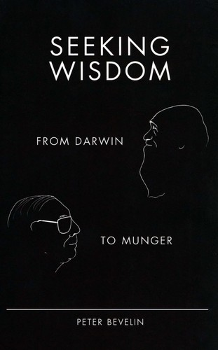

彼得·贝弗林（Peter Bevelin）是一位低调的瑞典商人，他既非学者，也非职业作家，却凭借《探索智慧：从达尔文到芒格》（Seeking Wisdom: From Darwin to Munger）一书在价值投资圈赢得了广泛尊重。本书初版于2003年，2007年推出修订版，是一部将进化论、心理学、物理学、数学与查理·芒格的多元思维模型融为一体的综合性著作。贝弗林花了数年时间研读达尔文、芒格、理查德·费曼、丹尼尔·卡尼曼等人的著作，再加上自己在商业实践中的观察，将人类为何犯错、如何减少错误这一根本问题拆解为一套可操作的思维框架。全书的野心不在于提供某个领域的专业知识，而在于构建一种跨学科的"思考的操作系统"。
全书大致分为三个部分。第一部分从生物学出发，追溯人类大脑的进化历程，解释为何我们的认知系统在现代复杂环境中频频失灵——大脑是为了在非洲草原上生存而演化的，而非为了在金融市场或公司董事会中做出理性决策。第二部分系统梳理了二十八种常见的人类误判心理，包括激励偏差、社会认同、对比效应、锚定效应、损失厌恶、禀赋效应等，每一种都附有来自商业、投资与日常生活的具体案例。这一部分深受芒格1995年在哈佛法学院发表的著名演讲"人类误判心理学"的影响，但贝弗林将其大幅扩展，引入了大量来自行为科学的实证研究作为补充。第三部分则转向正面——如何改善思考，包括如何运用数学思维、系统思维与概率思维来提升决策质量，以及如何通过构建检查清单来避免重复犯错。
芒格本人对这本书的评价极高。贝弗林在书中大量引用芒格的演讲、访谈与致股东信，将芒格的思想置于达尔文以来的科学传统之中加以阐释。芒格曾在伯克希尔·哈撒韦的股东大会上推荐过此书。值得注意的是，贝弗林的写作风格刻意追求简洁——他大量使用引语、列表与短段落，避免冗长的论述，使全书读来更像一本精心编纂的思维工具手册，而非传统意义上的学术著作。这种风格使得《探索智慧》成为一本适合反复翻阅、随时查阅的参考书，而非一次性读完便束之高阁的读物。
对于关注投资与决策的读者而言，《探索智慧》的价值在于它将芒格常年倡导的"多元思维模型"从抽象的理念落实为具体的知识框架。它让读者看到，所谓的"世俗智慧"并非来自某种神秘的天赋，而是来自对多个学科基本原理的持续学习与综合运用。贝弗林在书末引用了芒格的一句话作为全书的精神总结："花大量时间去了解世界是如何运作的人，总会比不这样做的人拥有巨大的优势。"这句话既是芒格一生的写照，也是本书存在的全部理由。